Guía del seminario
Guía del seminario
Guía del seminario
The Gymnastics Course
Manual del participante

Edición 2026
© 2026 BirdBox Coaching Limited. Todos los derechos reservados.
Ninguna parte de este manual puede copiarse ni compartirse sin autorización por escrito.
BirdBox Coaching Limited · 19 Baggot Street Lower, Dublin 2, D02 X658, Ireland
birdboxcoaching.com
Capítulo 1
The Gymnastics Course es un seminario de desarrollo del coaching profesional, brindado y dirigido por un equipo de entrenadores expertos, provenientes de todas partes del mundo, que apuntan a crear y obtener el mayor potencial posible de entrenadores profesionales, dueños de gimnasios y atletas. Esperamos desempeñar un papel en el desarrollo de su capacidad para entrenar mejor, y así poder crecer y estar cada vez más cerca de sus objetivos de fitness. Nuestra meta es emplear la información y metodología de la gimnasia y del movimiento del propio cuerpo, para así mejorar el entrenamiento y el coaching, tal y como lo hemos hecho nosotros a lo largo de estos últimos diez años.

Este manual es un documento que acompaña todo lo que descubrirán al participar en nuestro seminario presencial. Ha sido diseñado para iniciar, recordar y facilitar el aprendizaje. Les permitirá aprender de manera activa al participar del seminario. Por favor, tengan en cuenta que este manual no contiene toda la información mencionada durante el fin de semana.
Si desean seguir aprendiendo con The Gymnastics Course y afianzar lo visto en el seminario presencial, pueden estudiar a su propio ritmo con nuestro curso online. Se les puede brindar, a todos aquellos que han participado del seminario presencial, un descuento significativo, ayudando así a construir una experiencia de aprendizaje más profunda y completa. Este manual contiene imágenes, textos explicativos e informativos que siguen los puntos clave del seminario The Gymnastics Course. Habrá espacios asignados para que puedan tomar sus propios apuntes a lo largo del curso, permitiéndoles retener la información de la mejor manera posible.
Capítulo 2

Capítulo 3
Un Atleta – Un atleta es alguien capaz de competir y ganarle a otros en categoría élite. Un marcador para definir a una persona como atleta sería competir al más alto nivel de su deporte, o quedar en el top 5 de una competición nacional o internacional.
Análisis de necesidades – El análisis de necesidades es un proceso formal y sistemático para identificar y evaluar el entrenamiento que debería llevarse a cabo para ayudar al atleta a mejorar en su deporte, en su vida o su lesión.
Reglas – Una regla se basa en principios, son estándares sugeridos para ayudar a corregir y desarrollar a un atleta de manera segura, las reglas se pueden romper ya que son impuestas por los entrenadores mismos.
Leyes – Una ley es una regla mucho más estricta, que deberá ser cumplida obligatoriamente. Quebrantar la ley no es una opción ya que está basada en la ciencia. Por ejemplo, la ley gravitacional de Newton no se puede ni cambiar ni infringir.
Virtuosismo – El virtuosismo se define, en la gimnasia, de la siguiente manera: “realizar lo común tan bien que está fuera de lo común” (Greg Glassman, 2005).
Maestría – La maestría se define como “la mejora de la habilidad de un atleta para usar su potencial motor de forma efectiva” (BirdBox Coaching, 2020).
Tejido activo – El tejido activo es aquel que se contrae para ayudar a mantener las formas y posturas en una unidad sólida. Se puede decir que está el “tejido activo” cuando se contrae.
Hollow – Una postura usada para crear estabilidad. Se caracteriza por una contracción de la zona media y tejido activo desde los dedos del pie hasta los dedos de la mano. Recordemos que el hollow es una línea recta con una retroversión pélvica.
Estricto – Movimiento que carece de “kip”. El atleta hace uso de su control muscular y fuerza para completar el movimiento.
Kip – Un cambio brusco de dirección, con velocidad, generando un cambio en el plano o patrón de movimiento.
Forma – La manera o la metodología para realizar un movimiento correctamente, buscando la perfección.
Aparato estático – Es un aparato estable, no se mueve (suelo y barras).
Aparato dinámico – Es un aparato inestable, se mueve (anillas).
Movilidad – El movimiento alrededor de una articulación.
Flexibilidad activa – Es la amplitud máxima de una articulación o de un movimiento que puede alcanzar una persona sin ayuda externa, lo cual sucede únicamente a través de la contracción y distensión voluntaria de los músculos del cuerpo.
Flexibilidad pasiva – Es la amplitud máxima de una articulación o de un movimiento a través de la acción de fuerzas externas, es decir, mediante la ayuda de un compañero, un aparato, el propio peso corporal etc.
ROM – Rango de movimiento.
EROM – Rango de movimiento en extensión.
Spotting – Brindarle asistencia a un atleta como parte de una progresión o para prevenir una lesión.
Tensión – Se puede definir la tensión como “el punto en el que se está totalmente extendido y tenso”. Lo opuesto sería estar “flojo” o “dejado”. (Fowler & Crystal, 2010).
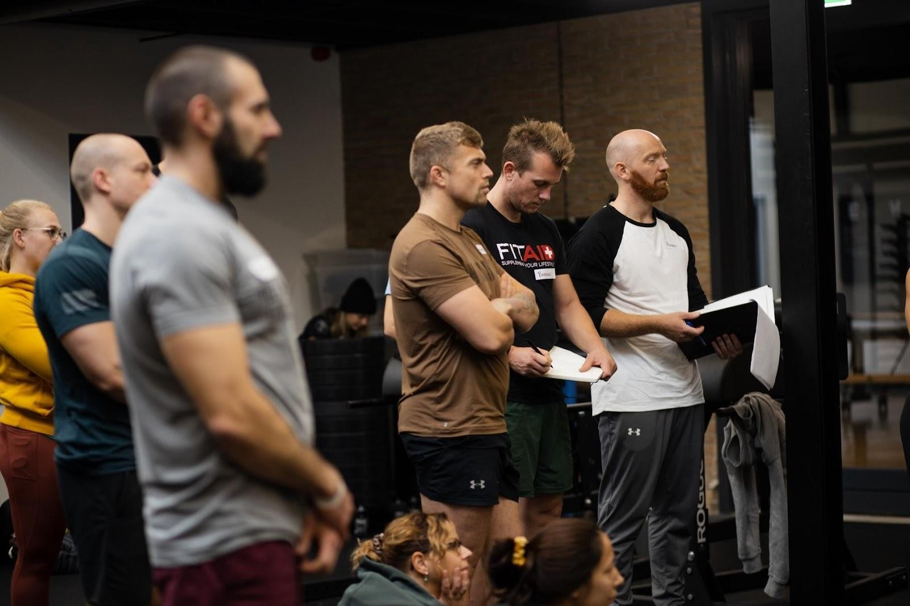
Capítulo 4
En el curso de gimnasia destacamos que CrossFit es un programa de entrenamiento de fuerza y acondicionamiento. Por lo tanto, al trabajar con un atleta o cliente, debemos hacer un análisis de sus necesidades. Entender las necesidades y requisitos de un atleta, sus requisitos deportivos o de vida y diseñar un programa de entrenamiento en torno a las discrepancias entre ambos.
La gimnasia es puro movimiento del propio peso corporal. En otras palabras, es la forma en que el cuerpo se mueve a través del espacio; de hecho, se dice que teóricamente debemos centrarnos en la gimnasia antes que en el acondicionamiento metabólico, ya que ésta es nuestra base para el movimiento. Estamos hablando de biomecánica. Si un individuo tiene una mala biomecánica (movimiento humano), se puede decir que la capacidad de lograr el acondicionamiento metabólico será nula o correrá el riesgo de lesionarse.

Capítulo 5
Regla #1: Estático antes que dinámico
Regla #2: Estricto antes que kipping
La fuerza es imprescindible para lograr la forma adecuada, y la forma adecuada es imprescindible para la conciencia y el control corporal. La gimnasia pone un claro énfasis en los movimientos a peso corporal. Sobre todo, un movimiento estricto demuestra dominio de un movimiento, es por esto que fomentamos el movimiento estricto antes de añadirle inercia. La fuerza adquirida mediante el trabajo estricto valdrá la pena, ya que se reduce significativamente el riesgo de lesión. Pequeños pasos traerán grandes recompensas. Evita la prisa; los movimientos se aprenden y se ganan.
Para demostrar dominio en todos los movimientos, debemos ser conscientes de nuestras formas y tener un control corporal virtuoso. Para adquirir esto, debemos ejecutar toda acción con la forma correcta. Para lograr la forma correcta, hay que tener la fuerza suficiente para realizar el rango de movimiento completo de principio a fin. La falta de fuerza comprometerá la posición, provocando que las fuerzas se envíen en direcciones incorrectas. Además, si no hay fuerza, no se podrá realizar la acción.
Apuntamos a desarrollar el movimiento de un atleta, y para ello explicamos cuál es el proceso que le permitirá al coach encontrar la forma más efectiva de hacerlo. Para desarrollar un movimiento, las opciones que tiene el entrenador son: usar indicaciones, limitaciones o intervenciones.
“La fuerza es imprescindible para lograr la forma adecuada, y la forma adecuada es imprescindible para la conciencia y el control corporal.”

Regla #3:
Construye una base isométrica.
Regla #4:
Utiliza la carga excéntrica como herramienta para el desarrollo de la fuerza y de las posiciones.
Las contracciones isométricas son aquellas donde el músculo se mantiene del mismo largo cuando se encuentra bajo carga o tensión. Entrenar los isométricos es esencial para la estabilización de la articulación y el desarrollo del tejido conectivo. Las contracciones excéntricas son aquellas donde el músculo se alarga mientras está bajo carga o tensión. Los beneficios de las cargas excéntricas son muchos, especialmente a la hora de hablar del cambio en la estructura del músculo para el desarrollo de la fuerza. Las contracciones concéntricas son aquellas donde el músculo se acorta mientras está bajo carga o tensión. En el entrenamiento, se realizan muchas contracciones concéntricas. Debemos tener en cuenta cómo queremos desarrollar la fuerza de nuestros atletas y qué riesgos trae cada una de estas contracciones. Estos riesgos se detallan en nuestra charla de programación.
Capítulo 6
Las indicaciones son dirigidas directamente al atleta para intentar crear un cambio a nivel posicional, utilizando la comunicación verbal.
Las restricciones o limitaciones son tareas o ejercicios que no intervienen en la longitud o la fuerza del músculo, si no que ayudan a que el individuo trabaje duro para mantener mejores formas y posiciones en un movimiento.
Las intervenciones son usadas cuando las indicaciones y restricciones no fueron efectivas. Buscan crear un cambio en la longitud y la fuerza del tejido muscular para así mejorar el movimiento.
Durante el seminario presencial, hablamos sobre diversos aspectos de las indicaciones, intervenciones y limitaciones. Pueden ver a continuación una ilustración de cómo decidir de manera efectiva si utilizar una indicación, una limitación o una intervención.
Capítulo 7
Como atleta y/o entrenador, es crucial entender las posiciones que hay dentro de los movimientos. A continuación, les pondremos una serie de imágenes que muestran las posiciones clave para el desarrollo. Al entender y practicar estas posiciones clave, pueden desarrollar sus habilidades, mejorar su rendimiento y reducir el riesgo de una lesión.
Les animamos a que añadan sus notas a las imágenes durante el seminario y que incorporen estas posiciones en su rutina diaria de entrenamiento.


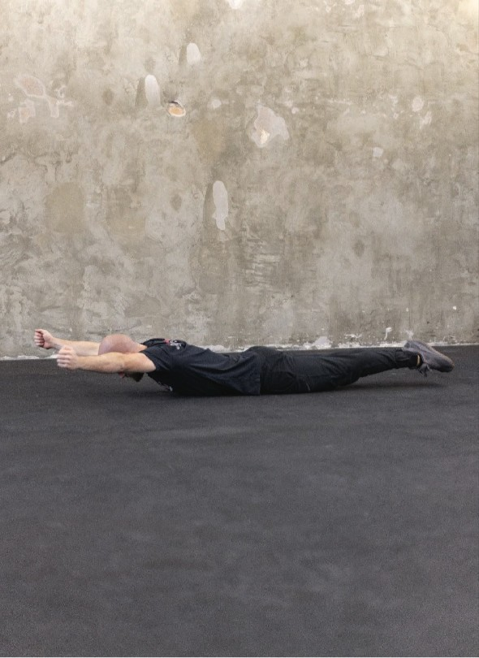


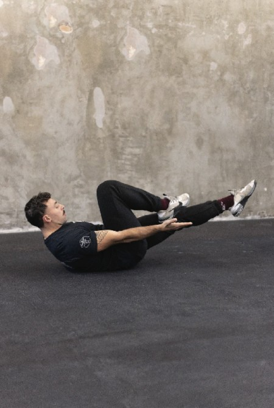


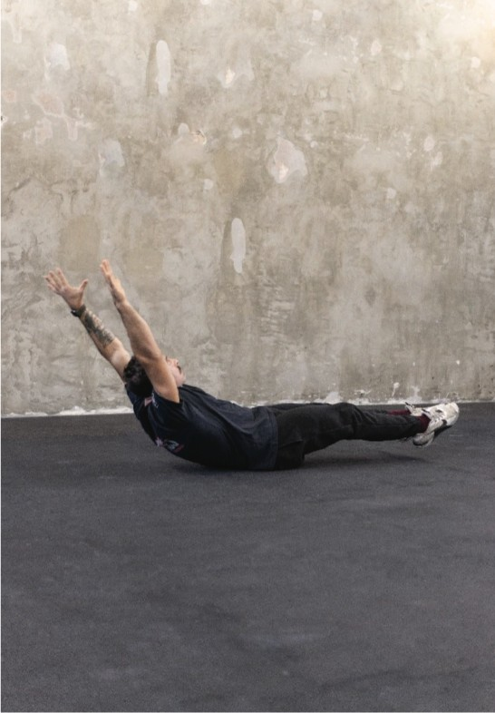
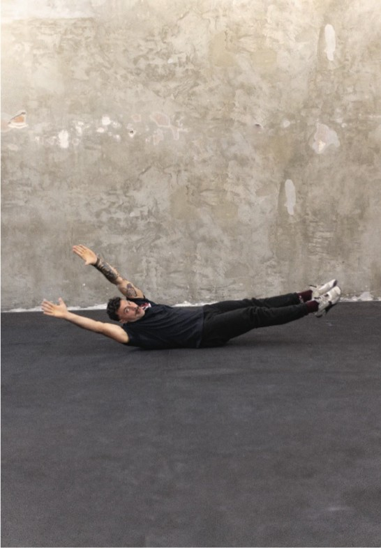


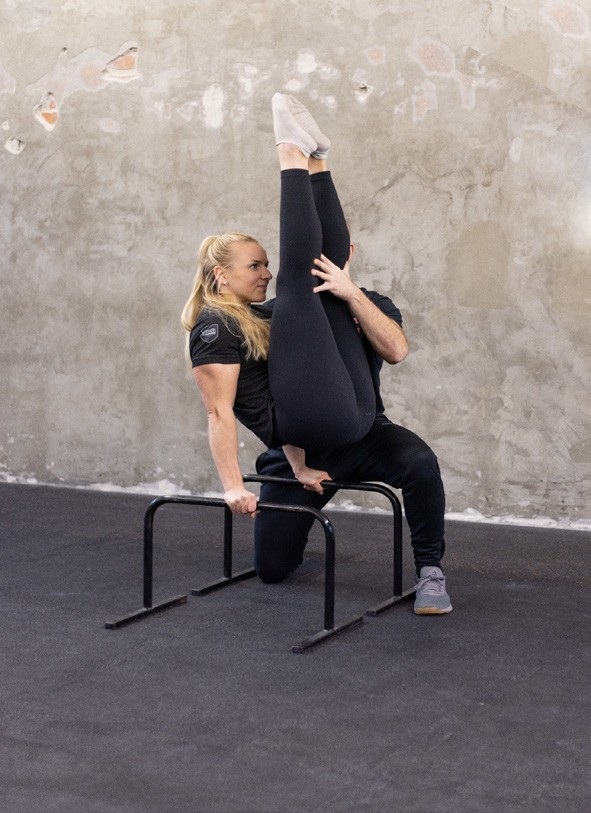


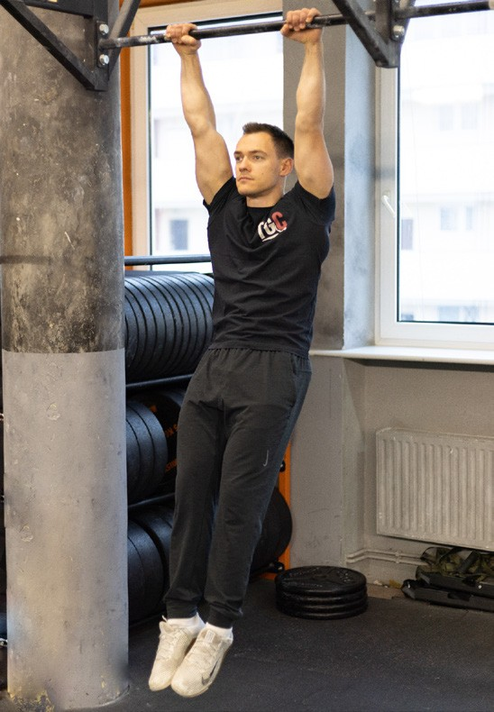
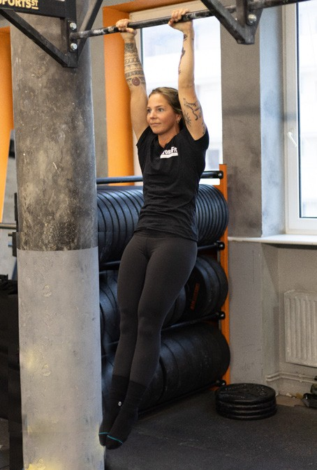


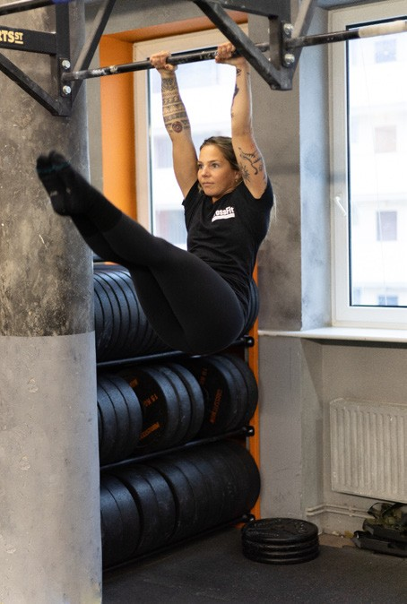


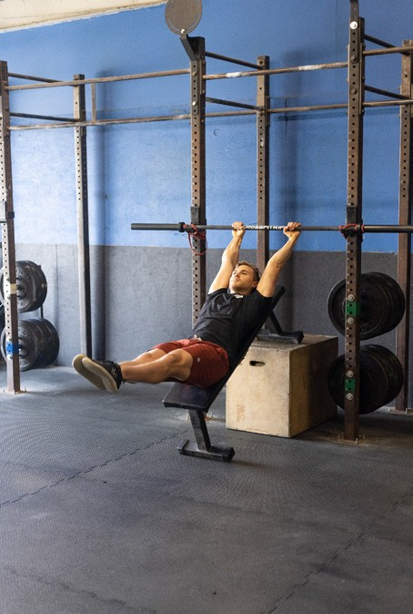


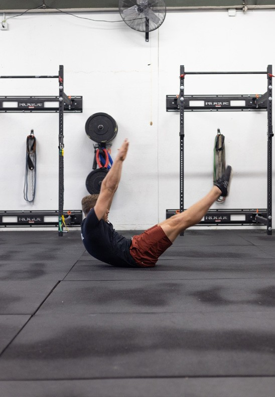


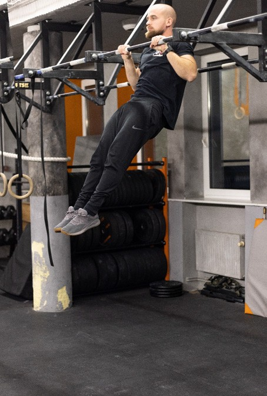


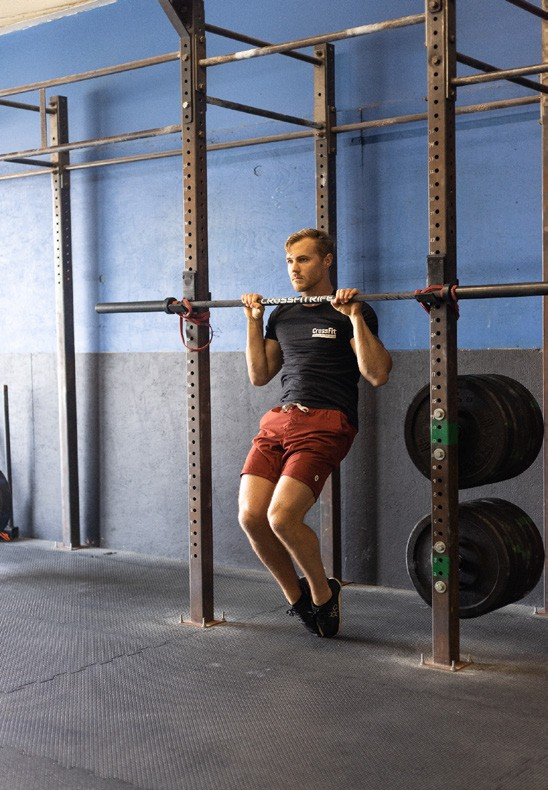

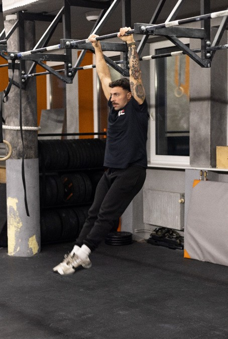


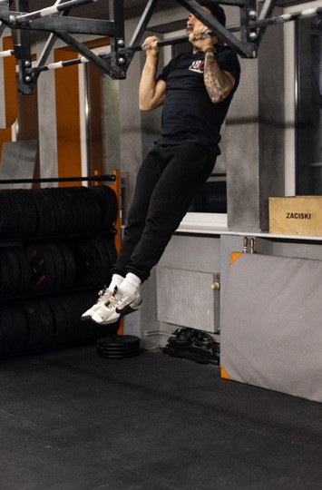


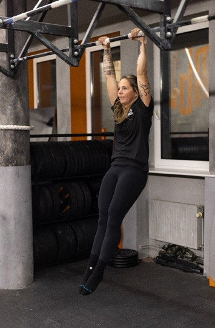
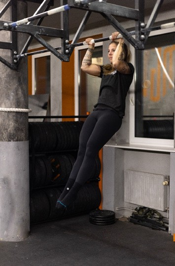


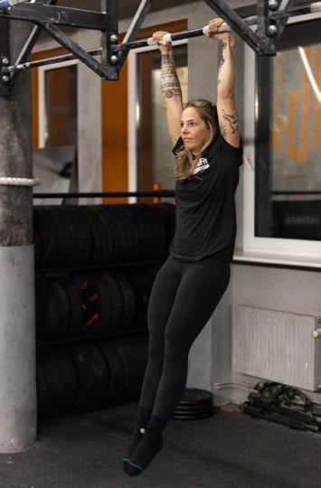


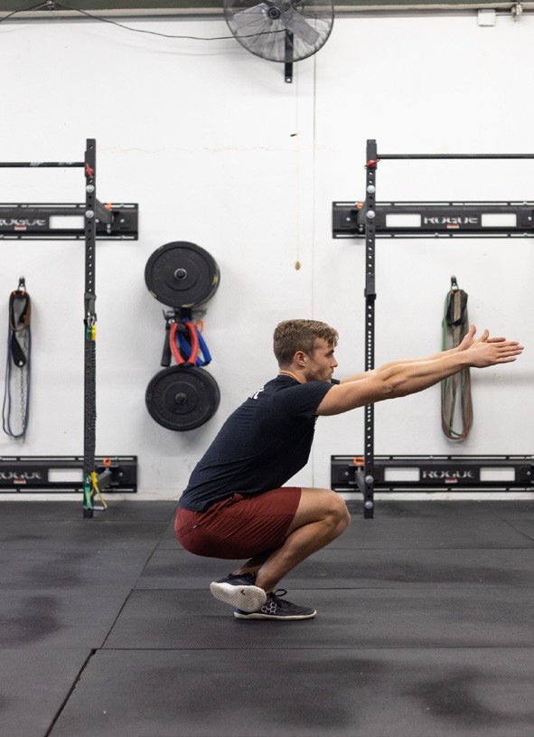


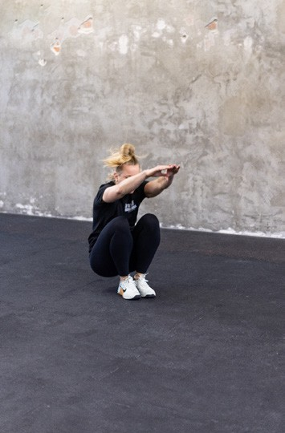

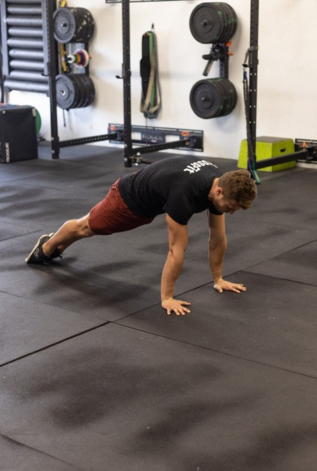


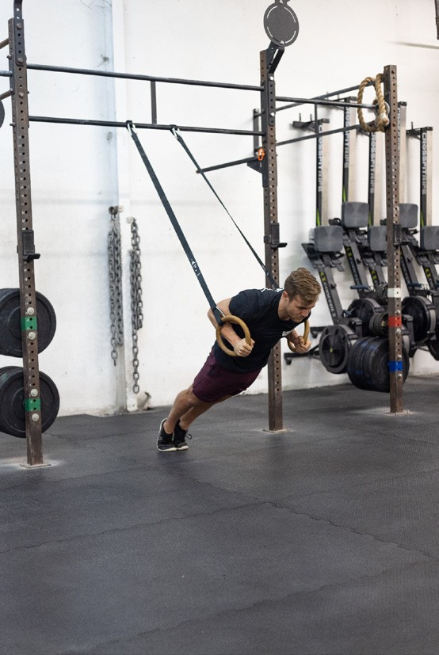


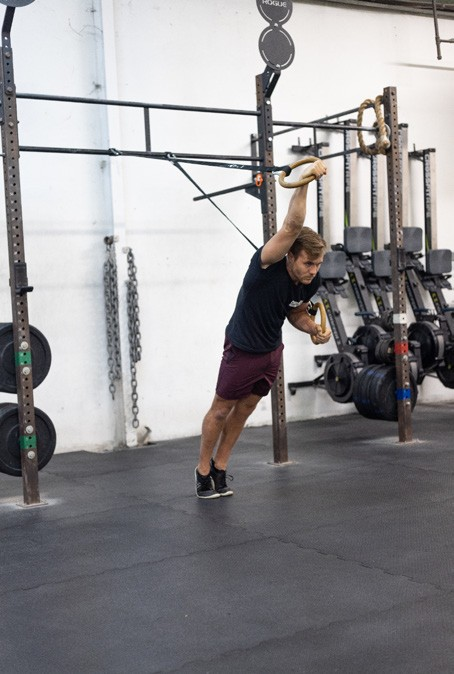


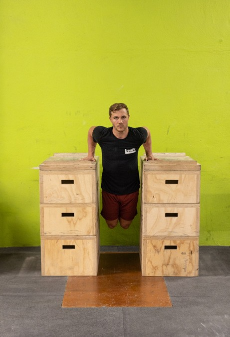


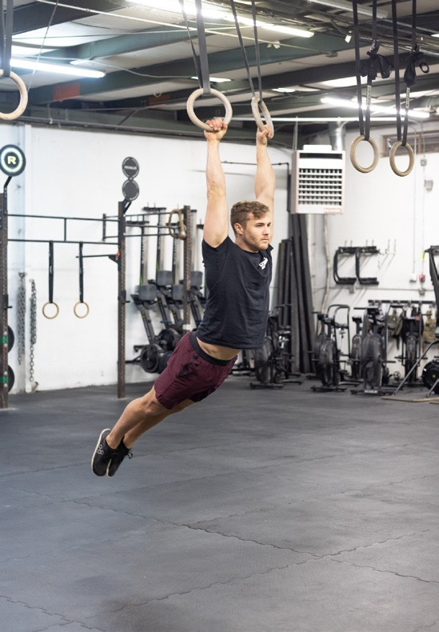


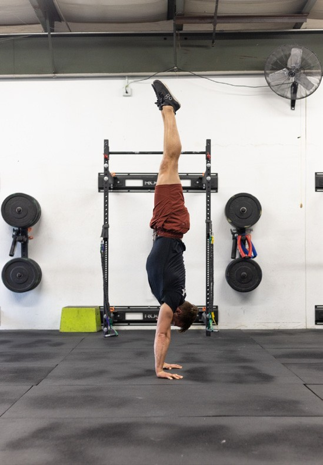
Capítulo 8
Durante nuestra charla sobre programación, entramos más en detalle. A continuación les compartimos algunos elementos clave de esta charla. Abarcamos mucha información importante; aquí resaltamos algunos aspectos para tener en cuenta.
La progresión lineal es un método en el cual se incrementa gradualmente la dificultad o el volumen de un ejercicio a lo largo del tiempo para estimular la progresión y la adaptación del cuerpo. Este método se utiliza comúnmente en los entrenamientos de fuerza para ayudar a que los atletas desarrollen su fuerza y la resistencia necesaria para realizar movimientos avanzados o levantamientos. Al utilizar una progresión lineal en el entrenamiento, los atletas pueden incrementar gradualmente su fuerza y resistencia de manera segura y efectiva. Es importante destacar que la progresión lineal debería realizarse en conjunto con una buena forma y técnica para evitar lesiones y asegurar los mejores resultados posibles. Nos gusta utilizar este método de progresión lineal en nuestras programaciones gimnásticas.
Muchas personas utilizan porcentajes para sus levantamientos pero no para los gimnásticos. En la gimnasia, la intensidad es el % de la repetición máxima (1 RM) o del TUT (tiempo bajo tensión). El volumen total es el total de repeticiones o de tiempo bajo tensión.
A continuación, encontrarán un ejemplo de una progresión lineal para el desarrollo de la dominada estricta. Verán que siempre se carga la primera serie de la sesión para poder crear una sobrecarga progresiva. Nos gusta empezar esta progresión con el 40%. Este primer ejemplo se basa en una serie máxima de 10 dominadas estrictas virtuosas.
Ejemplo de progresión lineal con el % del 1 RM:
| Semana | Sesión 1 | Sesión 2 | Sesión 3 |
|---|---|---|---|
| 1. | 4-4-4 | 5-4-4 | 5-5-4 |
| 2. | 5-5-5 | 6-5-5 | 6-6-5 |
| 3. | 6-6-6 | 7-6-6 | 7-7-6 |
| 4. | 7-7-7 | 8-7-7 | 8-8-7 |
| 5. | 8-8-8 | 9-8-8 | 9-9-8 |
| 6. | Retest | ||
*Comienza el ciclo de nuevo basado en el nuevo número de la serie máxima
Si no es capaz de hacer una dominada estricta, debemos desarrollar la fuerza pasando tiempo bajo tensión. En este caso, se utilizaría el ejemplo detallado a continuación. El primer número sería para aguantar con la barbilla por encima de la barra y el segundo número sería para el excéntrico. Empieza la serie saltando a la primera posición de barbilla por encima de la barra. Si no es capaz de soportar todo su peso corporal, se puede usar la asistencia del dedo del pie como escalamiento.
Ejemplo de progresión lineal con tiempo bajo tensión:
| Semana | Sesión 1 | Sesión 2 | Sesión 3 |
|---|---|---|---|
| 1. | 3/3 - 3/3 - 3/3 | 4/4 - 3/3 - 3/3 | 4/4 - 4/4 - 3/3 |
| 2. | 4/4 - 4/4 - 4/4 | 5/5 - 4/4 - 4/4 | 5/5 - 5/5 - 4/4 |
| 3. | 5/5 - 5/5 - 5/5 | 6/6 - 5/5 - 5/5 | 6/6 - 6/6 - 5/5 |
| Retest | Vuelve a probar la dominada estricta. Si eres capaz de realizar una dominada estricta, sigue con la sesión 1 de la semana 4. Si todavía no eres capaz de realizar una, continúa añadiendo segundos a la primera serie. Si has utilizado la asistencia del dedo del pie las primeras tres semanas, comienza de nuevo sin usar la asistencia. | ||
| 4. | 1-1-1 | 2-1-1 | 2-2-1 |
| 5. | 2-2-2 | 3-2-2 | 3-3-2 |
| 6. | 3-3-3 | 4-3-3 | 4-4-3 |
*Si se ha logrado completar toda la progresión, se puede ahora utilizar el ejemplo de la progresión con porcentajes mencionado al principio.
Se puede aplicar esta progresión a todos los movimientos gimnásticos. Es una manera simple de enfocarlo y es fácil de implementarlo en una programación. Tal vez sea la mejor manera de enfocarlo a nivel general para todos los miembros del gimnasio.
Si quieren jugar con el volumen, la intensidad y la frecuencia en una programación individual, y quieren entenderlo más en detalle, tienen abajo otro ejemplo de una progresión lineal con mayor variabilidad de volumen, intensidad y frecuencia.
*Este ejemplo se basa en una serie máxima de 10 dominadas estrictas virtuosas.
| Semana | Intensidad | Frecuencia | Volumen |
|---|---|---|---|
| 1. | 3 series al 40% 4-4-4 | 2 sesiones por semana | 24 repes |
| 2. | 3 series al 40% 4-4-4 | 2 sesiones por semana | 24 repes |
| 3. | 3 series al 50% 5-5-5 | 2 sesiones por semana | 30 repes |
| 4. | 3 series al 50% 5-5-5 | 2 sesiones por semana | 30 repes |
| 5. | 4 series al 40% 4-4-4-4 | 2 sesiones por semana | 32 repes |
| 6. | 4 series al 40% 4-4-4-4 | 2 sesiones por semana | 32 repes |
| 7. | 3 series al 40% 4-4-4 | 3 sesiones por semana | 36 repes |
| 8. | 3 series al 40% 4-4-4 | 3 sesiones por semana | 36 repes |
Como pueden ver, la intensidad, el volumen y la frecuencia son las mismas cada dos semanas. Después de las primeras dos semanas, aumenta la intensidad. Después de la tercera y cuarta semana, se reduce la intensidad para las siguientes dos semanas pero aumenta el volumen. En la semana siete y ocho, aumenta la frecuencia. Al jugar con el volumen, la frecuencia y la intensidad, podemos notar como aumentan los números. Se puede aplicar esto mismo a las contracciones isométricas y cargas excéntricas.
En el ejemplo, pueden ver que el volumen en los gimnásticos es bajo. En la halterofilia, no habrá adaptaciones si se trabaja con este volumen. En la gimnasia, se ganarán adaptaciones pasando tiempo bajo tensión y trabajando con tempo, no añadiendo volumen. Ocasionalmente, podemos trabajar a un volumen más alto pero lo que realmente debemos trabajar es el tiempo que pasamos bajo tensión y el tempo.
Esto significa que si realizamos la serie de 4-4-4 dominadas estrictas, estaríamos colgados en hollow por 5 segundos, realizaríamos un concéntrico de 3 segundos, aguantaríamos 3 segundos con la barbilla por encima de la barra y regresaríamos en 5 segundos.
Debemos entrenar la posición y la perfección, no el volumen ni la intensidad.